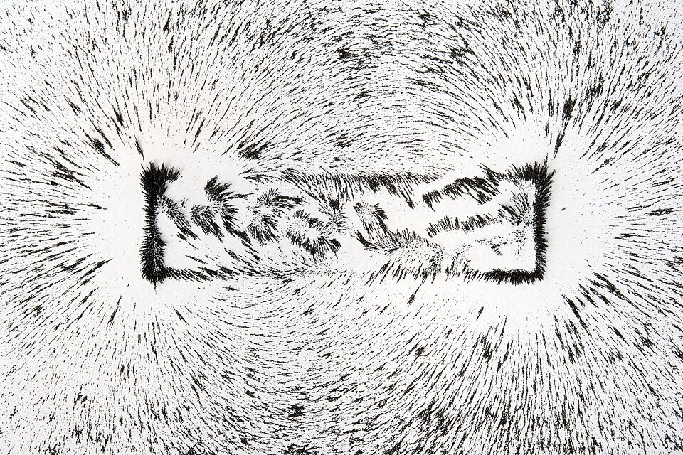
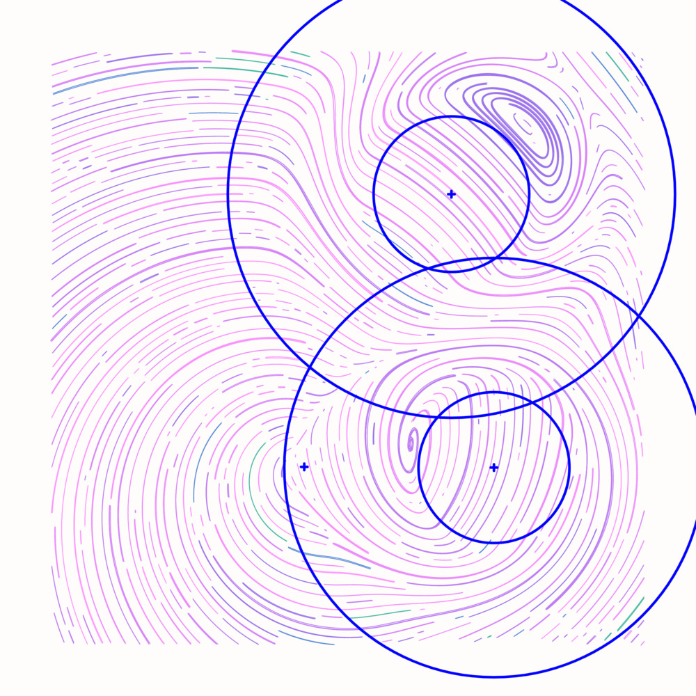
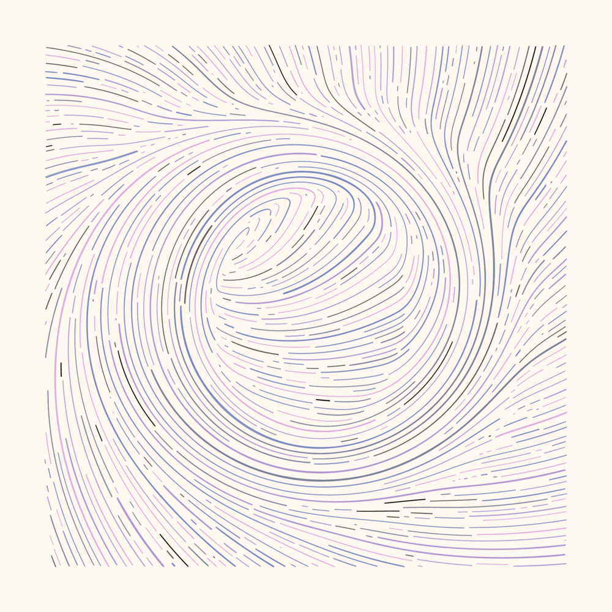
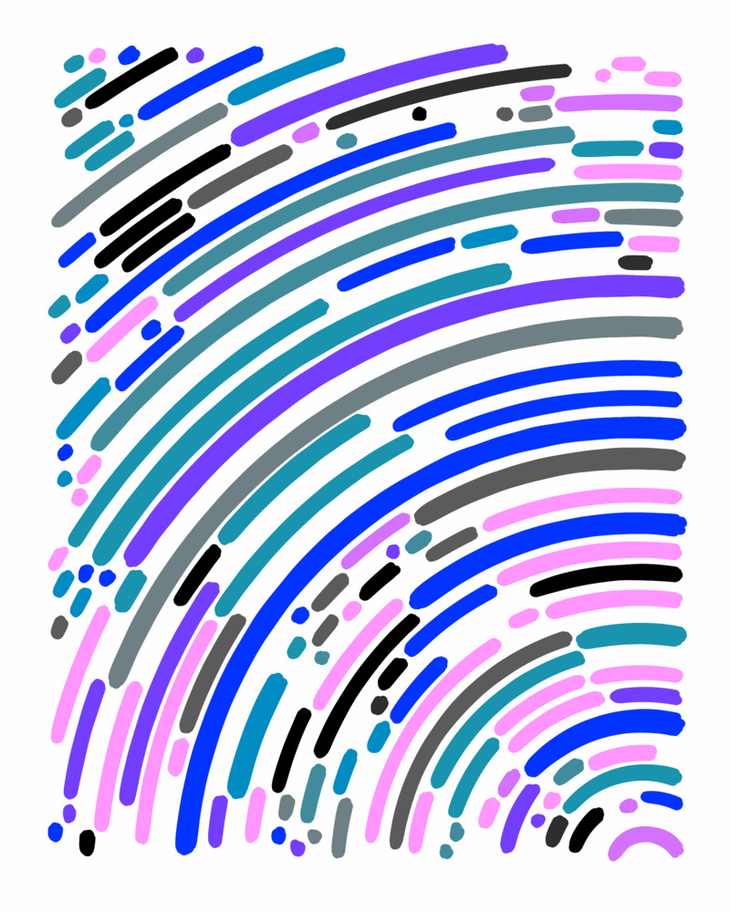
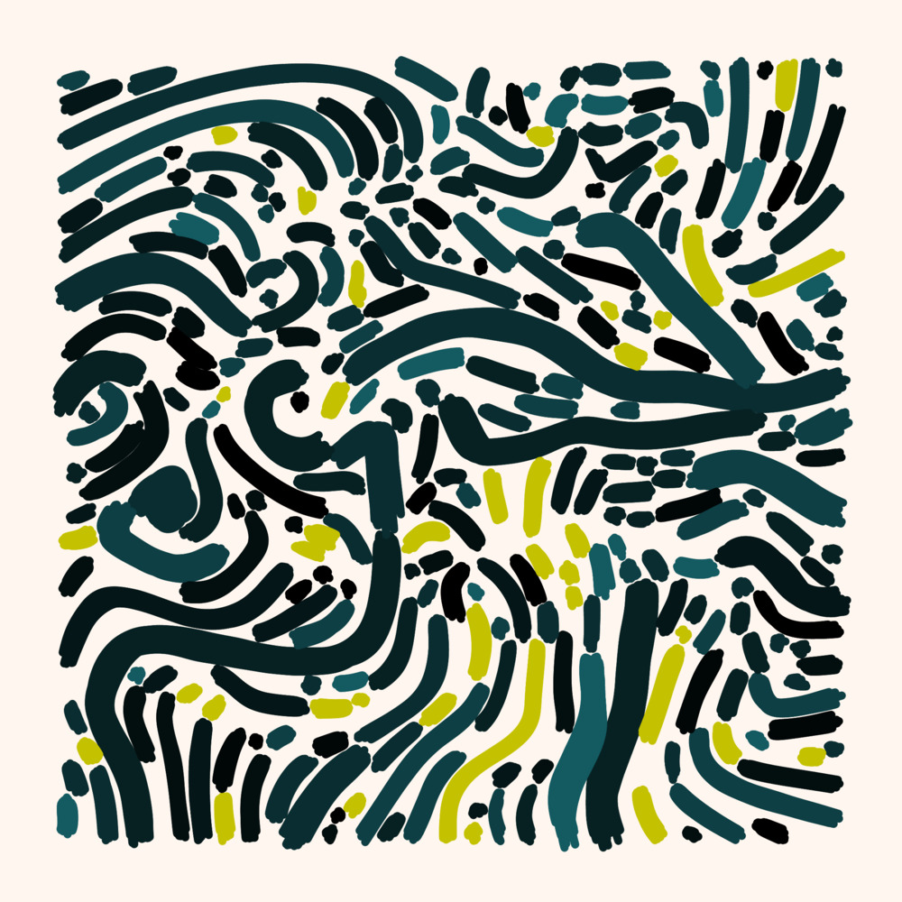
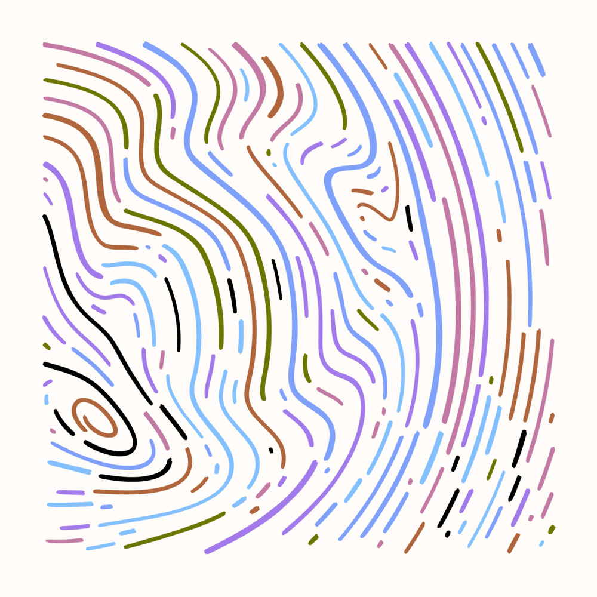

Floridablanca is an art generator based on flow fields.
💡 Short definition of flow fields is that they define a flow in every point in a space. Imagine a particle let loose in the field and allow it to go with the flow. Trace the particle’s path over time, and you’d get a smooth undulating line (assuming the field is ‘smooth’ and ‘continuous’).
Trace hundreds of paths in the flow field: you get flow field art.


 Floridablanca sample outputs
Floridablanca sample outputs
In Floridablanca, the flow field is generated by a set of poles, not unlike how magnetic poles generate a magnetic field.

A magnetic field made visible by tiny metal particles.



Once you realise this, it becomes quite easy to locate where the underlying poles are based on their influence on the lines.






